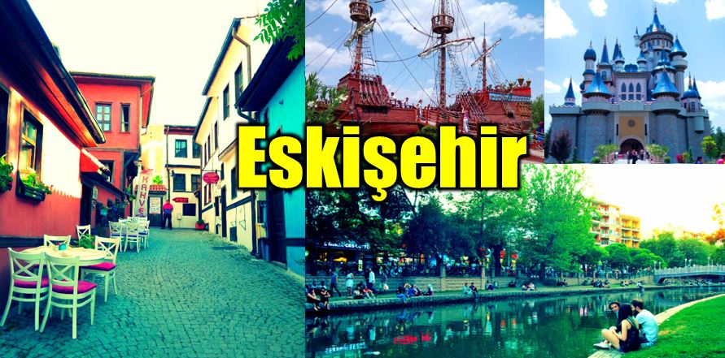
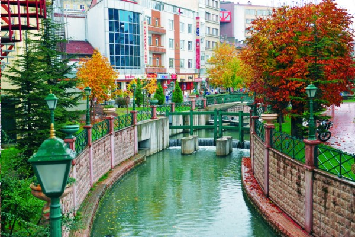

 |
Eskişehir.. More than a city |
Welcome to the web page which you can find everything about Eskişehir
Cheap tickets for culture and art

Netural places

Museums
And More...
Information And Hıstory Of Eskişehir
A twenty-fifth most populous province and city of Turkey. As of 2013, it has a population of 799,724. ESkişehir is a student city because of Osmangazi University and Anadolu University.
It is an advanced city in art institutions and facilities and culture and art. There are two symphony orchestras in Anatolia University and Metropolitan Municipality. Furthermore, with the International Eskişehir Festival held annually, exhibitions and shows are held in the city in the fields of music, theater, painting and cinema.
Eskisehir continued its existence under various civilizations as the day-to-day. Some of the civilizations established on Phrygia, Byzantine, Anatolian Seljuks and the Ottoman Empire
The 1st Air Tactical Command and the 1st Air Supply and Maintenance Central Command are also located in Eskişehir, which are connected to the Turkish Armed Forces Air Force Command. There are also military and civil airports (Anadolu University Airport).
In 2013, Eskişehir is carrying the titles of Turkish World Culture Capital and UNESCO Non-Conforming Cultural Heritage Capital.
The city is known as the Greek Dorylaion in the Old and Middle Ages, and the Latin name Dorylaeum. A new settlement was formed in the area south of the ruins, near the ruined and abandoned Dorylaion - Sharhöyük. According to W.M Ramsay, it is likely that the Dorylaion ruins were called Eskişehir and that the name was reached at that time.
Eskisehir is located on the northwest of the Central Anatolia Region. It is surrounded by Mahmudiye, Seyitgazi and Afyon in the south of Alpu and Ankara to the east of Mihalgazi and Sarıcakaya to the north of the city center, and İnönü and Kütahya in the west.
The climate of the city is the Central Anatolian type. The winters are cold and snowy, the summers are hot and without precipitation. Rainfall (except for mountainous areas) is short and short. July, August and September are months with the least rainfall.
Eskişehir province showed a large population increase especially during 1950-55 and 1965-70 period when Bulgarian immigrants settled here. The population of 210 thousand in 1950 was 553 in 1960, 786 in 1970, 912 in 1980, 1.3 million in 1990 and more than 1.5 million in 2010.